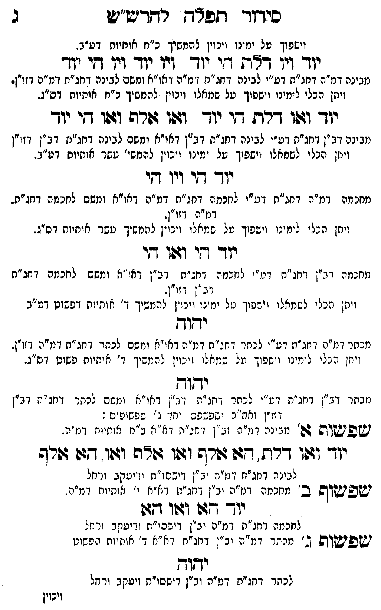

Neue Klartextfassung
(וישפוך על ימינו ויכוין להמשיך כ"ח אותיות דע"ב.) === טבלה === [טור ימין] יוד ויו דלת הי יוד ויו יוד ויו הי יוד === סוף טבלה === [מבינה דמ"ה דחג"ת דמ"ה לבינה דחג"ת דמ"ה דאו"א ומשם לבינה דחג"ת דמ"ה דזו"ן.] (ויתן הכלי לימינו וישפוך על שמאלו ויכוין להמשיך כ"ח אותיות דס"ג.) === טבלה === [טור ימין] יוד ואו דלת הי יוד ואו אלף ואו הי יוד === סוף טבלה === [מבינה דב"ן דחג"ת דמ"ה לבינה דחג"ת דב"ן דאו"א ומשם לבינה דחג"ת דב"ן דזו"ן.] (ויתן הכלי לשמאלו וישפוך על ימינו ויכוין להמשיך עשר אותיות דע"ב.) === טבלה === [טור ימין] יוד הי ויו הי === סוף טבלה === [מחכמה דמ"ה דחג"ת דמ"ה לחכמה דחג"ת דמ"ה דאו"א ומשם לחכמה דחג"ת דמ"ה דזו"ן.] (ויתן הכלי לימינו וישפוך על שמאלו ויכוין להמשיך עשר אותיות דס"ג.) === טבלה === [טור ימין] יוד הי ואו הי === סוף טבלה === [מחכמה דב"ן דחג"ת דמ"ה לחכמה דחג"ת דב"ן דאו"א ומשם לחכמה דחג"ת דב"ן דזו"ן.] (ויתן הכלי לשמאלו וישפוך על ימינו ויכוין להמשיך ד' אותיות דפשוט דע"ב.) === טבלה === [טור ימין] יהוה === סוף טבלה === [מכתר דמ"ה דחג"ת דמ"ה לכתר דחג"ת דמ"ה דאו"א ומשם לכתר דחג"ת דמ"ה דזו"ן.] (ויתן הכלי לימינו וישפוך על שמאלו ויכוין להמשיך ד' אותיות פשוט דס"ג.) === טבלה === [טור ימין] יהוה === סוף טבלה === [מכתר דב"ן דחג"ת דמ"ה לכתר דחג"ת דב"ן דאו"א ומשם לכתר דחג"ת דב"ן דזו"ן ואח"כ ישפשף יחד ג' שפשופים:] ■ שפשוף א' ■ [מבינה דמ"ה וב"ן דחג"ת דאו"א כ"ח אותיות דמ"ה.] === טבלה === [טור ימין] יוד ואו דלת הא אלף ואו אלף ואו הא אלף === סוף טבלה === [לבינה דחג"ת דמ"ה וב"ן דישסו"ת ויעקב ורחל.] ■ שפשוף ב' ■ [מחכמה דמ"ה וב"ן דחג"ת דאו"א י' אותיות דמ"ה.] === טבלה === [טור ימין] יוד הא ואו הא === סוף טבלה === [לחכמה דחג"ת דמ"ה וב"ן דישסו"ת ויעקב ורחל.] ■ שפשוף ג' ■ [מכתר דמ"ה וב"ן דחג"ת דאו"א ד' אותיות הפשוט.] === טבלה === [טור ימין] יהוה === סוף טבלה === [לכתר דחג"ת דמ"ה וב"ן דישסו"ת ויעקב ורחל.]
Original gegen neue OCR · Niqqud für Vergleich ausgeblendet
Original
(וישפוך עלK010-001 ימינו ויכוין להמשיך כ"ח אותיות דע"ב.) === טבלה === [טור ימין] יודK010-002 ויו דלת הי יודK010-003 ויו יוד ויו הי יוד === סוף טבלה === [מבינה דמ"הK010-004 דחג"ת דמ"הK010-005 לבינה דחג"ת דמ"ה דאו"א ומשם לבינה דחג"תK010-006 דמ"ה דזו"ן.] (ויתןK010-007 הכלי לימינו וישפוך עלK010-008 שמאלו ויכוין להמשיך כ"ח אותיות דס"ג.) === טבלה === [טור ימין] יוד ואו דלת הי יוד ואו אלף ואו הי יוד === סוף טבלה === [מבינהK010-009 דב"ן דחג"ת דמ"הK010-010 לבינה דחג"תK010-011 דב"ן דאו"אK010-012 ומשם לבינה דחג"ת דב"ן דזו"ן.] (ויתן הכליK010-013 לשמאלו וישפוך עלK010-014 ימינו ∅K010-015 ויכוין להמשיךK010-016 עשר אותיות דע"ב.) === טבלה === [טור ימין] יוד היK010-017 ויו הי === סוף טבלה === [מחכמהK010-018 דמ"ה דחג"ת דמ"הK010-019 לחכמה דחג"ת דמ"ה דאו"א ומשם לחכמה דחג"תK010-020 דמ"ה דזו"ן.] (ויתןK010-021 הכלי לימינו וישפוך עלK010-022 שמאלו ויכויןK010-023 להמשיך עשר אותיות דס"ג.) === טבלה === [טור ימין] יוד הי ואו הי === סוף טבלה === [מחכמהK010-024 דב"ן דחג"ת דמ"הK010-025 לחכמה דחג"תK010-026 דב"ן דאו"א ומשם לחכמה דחג"ת דב"ן דזו"ן.] (ויתן הכלי לשמאלו וישפוך על ימינו ויכויןK010-027 להמשיך ד' אותיותK010-028 דפשוט דע"ב.) === טבלה === [טור ימין] יהוה === סוף טבלה === [מכתר דמ"הK010-029 דחג"ת דמ"הK010-030 לכתר דחג"ת דמ"ה דאו"א ומשם לכתר דחג"ת דמ"ה דזו"ן.] (ויתן הכליK010-031 לימינו וישפוך על שמאלוK010-032 ויכוין להמשיך ד' אותיותK010-033 פשוט דס"ג.) === טבלה === [טור ימין] יהוה === סוף טבלה === [מכתר דב"ןK010-034 דחג"ת דמ"ה לכתרK010-035 דחג"ת דב"ן דאו"א ומשם לכתר דחג"ת דב"ן דזו"ן וחו"ב שטפיםK010-036 יחד ג' שפשופים:] ■ שפשוף א' ■ [מבינהK010-037 דמ"ה וב"ן דחג"ת דאו"א כ"ח אותיות דמ"ה.] === טבלה === [טור ימין] יוד ואו דלת הא אלף ואו אלף ואו הא אלף === סוף טבלה === [לבינה דחג"תK010-038 דמ"ה וב"ן דישסו"ת ויעקב ורחל.] ■ שפשוף ב' ■ [מחכמה דמ"ה וב"ן דחג"ת דאו"א י' אותיות דמ"ה.] === טבלה === [טור ימין] יוד הא ואו הא === סוף טבלה === [לחכמה דחג"ת דמ"ה וב"ן דישסו"ת ויעקב ורחל.] ■ שפשוף ג' ■ [מכתר דמ"ה וב"ן דחג"ת דאו"א ד' אותיות הפשוט.] === טבלה === [טור ימין] יהוה === סוף טבלה === [לכתר דחג"ת דמ"ה וב"ן דישסו"ת ויעקב ורחל.]K010-039
OCR · fehlbar
סידוך תפד רדדיש"יש ג וישפוך טלK010-001 ימינו ויכוין להמשיך כ"ח אותיות דע"ב. יוךK010-002 ויו ד"ת -י וד זיו יוךK010-003 ויו די יוך מבינה דמ"תK010-004 דחג"ת דע"יK010-005 לבינה דחג"ת דמ"ה דאו"א ומשם לבינה דחג"יזK010-006 דמ"ה דזוין. ויתןK010-007 הכלי לימינו וישפוך טלK010-008 שמאלו ויכוין להמשיך כ"ח אותיוח דס"ג. יוך וזפו דרת חי יוך ודפו בורה וגו דגי ייך מבינהK010-009 דב"ן דחג"ח דט"יK010-010 לבינה דחגזחK010-011 דב"ן דאויאK010-012 ומשם לבינה דחג"ת דב"ן דזי"ן ויז. הכל יK010-013 לשמאלו וישפוך טלK010-014 ימינו 'K010-015 ויכוין להמשי'K010-016 עשר אוחיוח דע"ב. יוך דיK010-017 ויו חי מחכמהK010-018 דמ"ה דחג"ת דע"יK010-019 לחכמה דחג"ת דמ"ה דאו"א ומשם לחכמה דחג"ת.K010-020 דמ"ה דזו" . ויחןK010-021 הכלי לימינו וישפוך טלK010-022 שמאלו ויכזיןK010-023 להמשיך טשר אותיוח דס"ג. יוך די וגשו די מחכמהK010-024 דב"ן דחנ"ח דט"יK010-025 לחכמה דח: "תK010-026 דב"ן דאו"א ומשם לחכמה דחג"ת -ב ". דז("-. ויחן יגכלי לשנזאל י (ישפוך טל ימ נז וינויץK010-027 להמשיך ך' אותיוחK010-028 דפשוט דע"ב 2322 זכתר דמ"קK010-029 דחג"ת דע"י לכתו' דג"ח דמ"י: דא"י ונזשםK010-030 לכתר דחג"ח דמ"נ דז("- ויחן הכל"K010-031 לימינו וישפוך על שמאלזK010-032 ויכוין ל המשיך "' איתיותK010-033 פשוט דס"ג. ידקו-ץ נזניזך דג"ןK010-034 דחג"ת ד" ל כחר דחג"ת דג"ן דאו"א (משם לנתרK010-035 דחג"ת דב"ן ( ז"ן ואחז"נ י [פ שפםK010-036 יחד ג' זפשופ ים : ישפיטשיפ בח' גיני ומ". (ב"ן (זחג"ק דא"] נ"ח א-יזיוח דנז"מ. יו- ו:וו דרת . [ג דורש וגטו צה יגוו. חגו דורש לבינה דחג"זK010-037 דמ"ה וב"ן דישסו"נז וויטקב ורחל ישפישוש ב ' מחנחה די["ה וב"ן דג"ח דזא"נז י' אות יוח מ"ה. י 7ב: זגוו דזו לחכמח דחג"נ: דמ"ה וב"ן דישסי"ת ודיטקב ורנזל ישפישזוש נ' מניזר דמ"ח וב"ן דחנ"ת דא"ז -' אוייוח הפשוט ידזוך לכחר דחג"חK010-038 דמ"ה וב"ן דישסו"ת ויטקב ורחל ויכויןK010-039